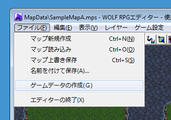
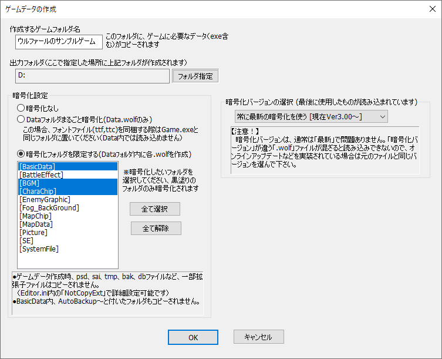

【ゲームデータの作成】

ゲームデータの作成は、「ファイル」→「ゲームデータの作成」から実行することができます。実行時には以下のウィンドウが表示されます。

「作成するゲームフォルダ名」、「出力フォルダ」はその名の通りですので説明を省きます。
ここでは暗号化設定について詳細に説明します。
【暗号化設定】
・暗号化なし
暗号化なしで、ゲームの動作に必要なファイル群（Game.exeやDataフォルダ内の中身）を全てコピーします。
・Dataフォルダまるごと暗号化
Dataフォルダ内のデータを全て暗号化して1ファイルにします、その他の必要なファイル群もコピーします。なお、フォントファイルを同梱する場合は事前にGame.exeと同じフォルダに移動してください。
・暗号化フォルダを限定する
Dataフォルダ内のデータのうち、下のリストボックスで選択した特定フォルダだけを暗号化してコピーします。今後アップデートの可能性がある場合はこちらが便利です。
【暗号化バージョンの設定】
ゲームデータ暗号化のバージョンを選択します。通常は「最新」で問題ありません。
オンラインアップデート機能などを搭載した際、部分的に暗号化のバージョンが異なるファイルが混ざってしまうと読み込めなくなってしまうため、そういった場合は元の暗号化バージョンと同じバージョンを選択してください。